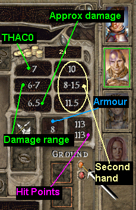
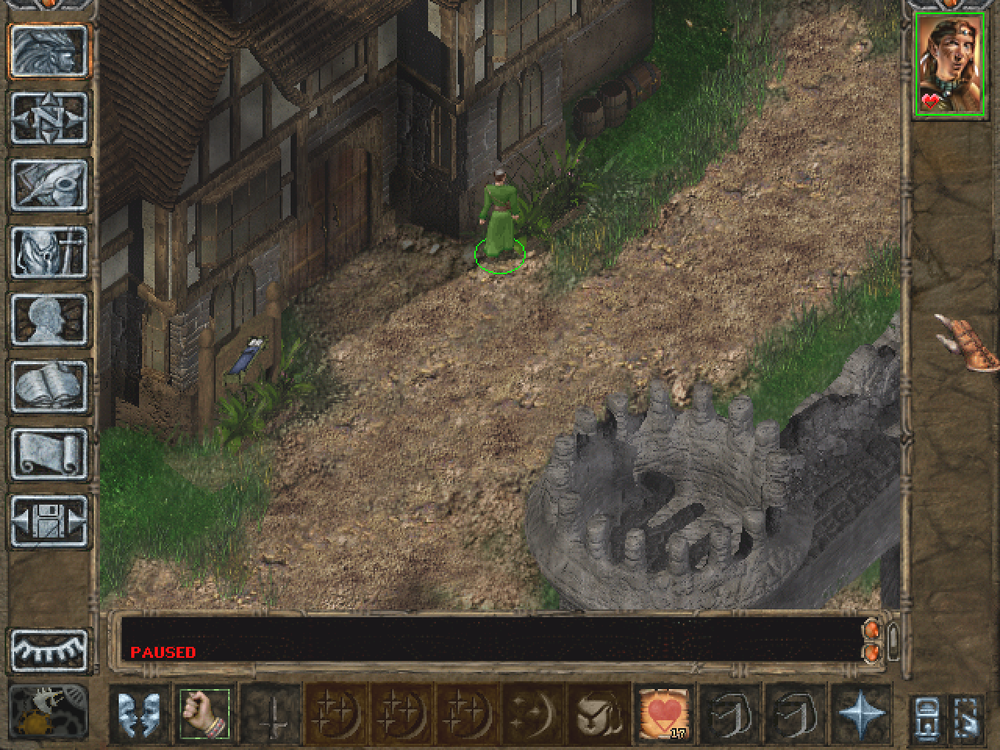
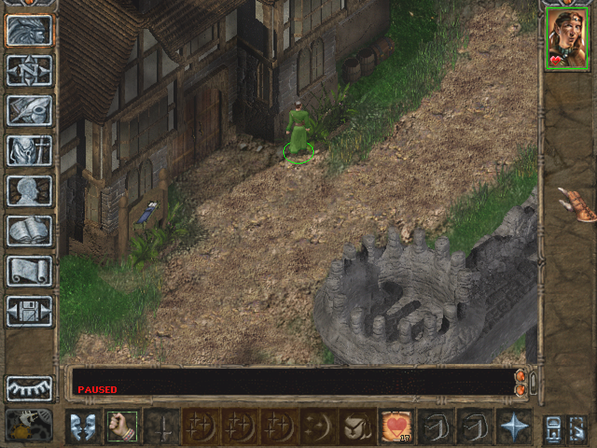

Components
Loot panel
Difference vs Baldur's Gate I/II Enhanced Edition:
- Panel is extension of original container screen, it cannot be visible always on main screen, still need open any container around
- Has two modes:
- Classic (like Enhanced Edition)
- Grouping items, one click to pickup same item type from all corpses
In file "TobEx_ini\TobExTweak.ini" you can tune options:
- UI:Loot Panel Item Grouping=1
Switch between Classic and Group modes without reeinstalling component
- UI:Loot Panel Sorting Unidentified First=1
Enable priority sorting, unidentified items will be always show first
- UI:Loot Panel Sorting Order=33, 34, 5, 14
Set sorting order by priority numbers, numbers coded in file "documentation\loot_groups_table.txt", for this example priority is Gold=>Gems=>Arrows=>Bullets=>All Other
Colorize icon of not memorized scrolls
Add green border for "ready to memorize" scrolls, you can change icon effect by replacing file STORTIN3.BAM to yours

Show HitPoints on NPC/Party when pressed TAB key
Available options:
- Enemy
- Enemy + Ally/Summon/Charmed
- Enemy + Ally/Summon/Charmed + Party
- Enemy + Neutral
- Enemy + Neutral + Ally/Summon/Charmed
- Ally/Summon/Charmed
- Ally/Summon/Charmed + Party
- All NPC + Party

THAC0 and Damage info on Inventory screen
Dark portraits on party when dragging not allowed items

Alternative Inventory background picture by Sir-Kill:
Weapon Damage Range on Character Sheet

Total Roll info on Character creation screen
Journal with fold/unfold quests
Normal:
Large text area mode:

Greyscale background on Pause
Available options:
- No Icon, switchable by key Numpad +
- Static GUI icon + switchable by key
Effect like TimeStop, but only background is greyed, switchable by clicking on icon or hotkey
Static GUI icon:
Smart Hand off slot
Allow fit weapon/shield in hand off slot even when item in main hand has restrictions to hand off.
You can drag to main hand slot for example Two-Hand Sword and to Off hand slot any Shield, but shield will be disabled. Option usefull for switching between main hand' weapon slots, if selected item has no restrictions, hand off slot will be activated again. If you save game with incompatible items, you can't load it later if this compenent will be uninstall

Disable Equipping Off Hand Weapon for BG1
Restoraton of original BG1 feature for BGT, allows party equip only Shields in Off Hand. NPCs always can equip weapon in off-hand because NPCs from BG1 MODs may have weapons in both hands. In BG2 this component automaticaly deactivated.
Show NPC's active effects on right mouse click
Available options:
- Casted spells
- Casted spells + show remaining time
- Casted spells + show remaining time only for spells casted by Party
- Equipped items & Casted spells
- Equipped items & Casted spells, show remaining time
- Equipped items & Casted spells, show remaining time only for spells casted by Party
Componet make game little easy in "mage battle", you can get info about active effect/spells on enemy (or any NPC). No more need to search chat window back to see which mage what casted.
You can filter print of unwanted effect types, in file "TobEx_ini\TobExTweak.ini" edit line UI:Log Active Buffs Filter List=, add numbers from file "documentation\icon_effects_table.txt". Don't need filter numbers starting with ";" symbol, they already internaly filtered. Example: UI:Log Active Buffs Filter List=24, 25 - no info about "Protection from Acid" and "Protection from Cold"

Extended Items/Quest/Spell/WorldMap messages
Quest messages:
- New Quest added
- New Quest event sound
- Quest updated
- Quest done event sound
- Storyline updated
You can change quest sounds by replacing files TADA.wav & FOLSTART.wav to yours
Item/Spell/Worldmap messages:
- Unhided/hided Worldmap Area
- Gained/lost/dropped Item
- Interrupted spell
Extended roll/damage combat text
Simple mode: Damage type
 Full mode 1: Attack Roll
Full mode 1: Attack Roll

Attack Roll "12 + 2 = 14 > 20 - 10 = 10 Hit" explanation:
12 - Hit(THAC0) Roll
+2 - Hit(THAC0) Bonus
20 - THAC0 Base of attacker
10 - Armor Class of victim
Full mode 1: Unsuccessful Effect Roll

Unsuccessful Effect Roll "13 + 6 >= 19" explanation:
13 - Effect Roll
+6 - Effect Saving Throw Bonus
19 - Victim's Saving Throw vs Effect type(death/wand/...)
Full mode 2: Attack Roll + Damage Roll:

Damage "7 = (13 - 15%) * 0.75" explanation:
13 - Damage Roll
15 - Resistance (piercing) in %
0.75 - Game Difficulty modifier (NORMAL, -25% damage)
Extended combat text is automaticaly disabled if "Feedback->To Hit Rolls" game option setting is Off
To enable original Hit/Damage Roll information (very verbose, mainly designed for debug purpose) add hidden option "Extra Combat Info=1" to baldur.ini [Game Options] and enable "Restore Extra Combat Info Text=1" in TobExCore.ini [Debug]
Do not clear drained spell slots
Keep spells on own places (but out of selection border) when levels was drained, after restoration spells will be in their former places. Quickslots with drained spells are still erased, you need reassign quickslots again
Show Hit Points/Action on Portrait
Show only current spell or activated item from quickslots/inventory, not weapon

Legacy of Bhaal/Heart of Fury difficulty mode
Available only at start new game, you cannot change difficulty later.
You can customize(create own set) bonuses after install, see "documentation\nighmare_difficulty.txt"
Legacy of Bhaal
Neutral/Enemy get Bonuses:
- -5 THAC0
- -11 Armor Class
- +1 Attacks Per Round
- -5 Saving Throw vs Death/Wands/Polymorph/Breath/Spell
- 300% HitPoints + extra 80
- Never break Morale
- +12 Levels in all available Classes
Party get Penalty:
- +2 Monsters at Rest Encounter
Party get Bonuses (optional, selectable at installer):
- 200% Experience Point for kills + extra 1000
- Party's Summon get most bonuses as Enemy
- +75 Gold for kills
Heart of Fury (Icewind Dale)
Neutral/Enemy get Bonuses:
- -5 THAC0
- +1 Attacks Per Round
- -1 Saving Throw vs Death/Wands/Polymorph/Breath/Spell
- 300% HitPoints + extra 80
- Never break Morale
- +12 Levels in all available Classes
- Faster Movement Rate
Party get Bonuses:
- 200% Experience Point for kills + extra 1000
- Party's Summon get most bonuses as Enemy
- +75 Gold for kills
Fists of Fury (by Azazello)
Neutral/Enemy get Bonuses:
- -5 THAC0
- -8 Armor Class
- +1 Attacks Per Round
- -3 Saving Throw vs Death/Wands/Polymorph/Breath/Spell
- 300% HitPoints + extra 65
- Never break Morale
- +6 Levels in all available Classes
Party get Penalty:
- +1 Monsters at Rest Encounter
Party get Bonuses:
- 200% Experience Point for kills + extra 1000
- Party's Summon get most bonuses as Enemy
- +75 Gold for kills
This component need install after BGT because BGT installer blocks starting of BG2 for Mages if
difficulty is above NOVICE
Block Door/Portals/Area Escape if enemy is in sight (difficulty tweak)
Eliminates exploit when player enter room with many enemies, get agro, leave area, some enemies follow the player and split up between areas. Now you cannot escape area if any enemy is in sight. You must kill all enemies or use other tactics to lure enemies away from the exit

Allow enemy to bump invisible/invulnerable party members (difficulty tweak)
Eliminates exploit when player block narrow passage with invisible chars and uses ranged weapon to easy kill. Now enemy will bump your invisible chars to clean road
Restore BG1 Style Greeting
In BG1 dialogue starts with greeting, then char moves closer to companion and continue speaking.
In BG2 greeting happens after moving, text of greeting immediately overlapped by dialogue. Component restores BG1 behaviour for BG2 engine.
Highlight Active Zones/Points
Simple "anti pixel hunting mode", may not work on custom maps with non standart cursor
Available options:
- Pushable actions
- Pushable actions + Information plates
- Pushable actions + Information plates + Transitions/Exits
- Pushable actions + Information plates + Transitions/Exits + Door Entrances/Enters

Double Mouse Render Rate
Engine shows mouse at standart 30Hz rate, it is too low to be good, component increase frequency to 60Hz to remove mouse "lagness". Basicaly it double rendering rate of all graphics, if you have slow 2D/OpenGL drivers take care about final framerate. Intel integrated drivers have relatively slow 2D (if you don't like switched to OpenGL), to increase framerate Please play at 16-bit color mode and switch to Software BLTs in Graphics setting
Fast LOAD/SAVE Screen
Removes unnecessary time delays on LOAD/SAVE screens.
x2 Scaled Graphics for HD Resolutions
Available options:
- GUI only
- GUI + Cursor/Tooltips
- GUI + Cursor/Tooltips + Main Game Window (Beta)
Restoration of original(broken and unfinished) BG2's feature, works at resolution 1280x960(fully tested), 1600x1200, 2048x1536. Restored only DirectDraw2D 16/32-bit + OpenGL 32-bit modes, 24-bit colors mode was not restored.
Can be used together with Widescreen Mod at any resolution, require installing Widescreen Mod in special mode - divided resolution. When Widescreen Mod ask for X(width) and Y(height) enter "divided by 2" numbers, for example for resolution 1920x1080 enter X=960, Y=540.
Original non-scaled 1280x960 picture (widescreen mod)
x2 Scaled 1280x960 GUI + Cursor/Tooltips
 x2 Scaled 1280x960 GUI + Cursor/Tooltips + Main Game Window

x2 Scaled 1280x960 GUI + Cursor/Tooltips + Main Game Window

Shift Subtitles Below Movie Frame
Original
 Shifted down
Shifted down

Improved Store&Bag Interface
- 'Shift' key + Click select all stack
- Opened Bag/Book on Right side will hide unsuitable items on Left side (e.g. Store will show only ammos if you open 'Ammo Belt' on left)
Disable 'Special Abilities' button if all abilities are used

Spell Sequencer Panel

Innate/Ability/Spell Description Screen on Right Click
This component was added due to the huge work of Prozh to add Icon/Item Abilities/Tooltip fixes and Innate/Ability text update.

Disable Portrait Icons Added by Class Abilities/Equipped Items
Shows only temporary effects from spell and global character's states like Panic/Maze/etc.
Switchable by hotkey to 3 modes:
- Show all icons like vanilla
- Show icons from all active effects
- Show only icons with 142(Display portrait icon) effect opcode
Mode switchable by key Numpad /

Custom hotkeys
Automaticaly installing component
- Numpad / Change "Hide static icons" mode
- Numpad * Show/Hide HP on Portrait
- Numpad - Enable/Disable new Spell Menu
- Numpad + Enable/Disable Greyscale background
Colored Selection Circles

New Spell Selection Overlay Menu
Idea and icons by Bubb

Borderless World Map
Removes left/right/bottom borders on resolutions 800x600 and higher
1024x768
Show Float NPC Names ('Alt' key)

Additional Character Information on Record Screen
- Intoxication
- Fatigue
- Luck
- Casting speed
- Thac0 specialization bonus

Normalize Sound Volume
Auto volume-up sounds to max available value, mainly usefull for voices because they was recorded at low values. If you hear too loud some of sound, you can filter it personaly, first enable component "Print Filename of Normalized Sound (diagnostic mode)", then add printed filename to "overrides/EXCLNORM.2DA" (see "documentation\EXCLNORM.2DA", i already excluded most of dog/wolf barks)
Add Pause To Save Game
If the game was paused during saving, the pause will be activated automatically when loading this savegame
Additional Icons on Portrait
- Improved invisibility
- Blur/mirror image
- Morale break

Restore BG1 Casting Sounds
Restore original BG1 Casting Sounds for BG1 part or all low-level(1-5) spells
Uses "BG1_" prefix for additional CAS_/CHA_ files. Filename mapping:
BG1 -> BG2
CAS_M0* -> CAS_M0* Mage Post Casting Sound
CAS_P0* -> CAS_P0* Priest Post Casting Sound
CAS_PM*F -> CHA_FM0* Female Mage Casting Voice
CAS_PM*M -> CHA_MM0* Male Mage Casting Voice
CAS_PP*F -> CHA_FP0* Female Priest Casting Voice
CAS_PP*M -> CHA_MP0* Male Priest Casting Voice
CAS_P0*N -> CHA_SP0* Silence/Short Priest Casting Voice
CAS_P0*N -> CHA_SM0* Silence/Short Mage Casting Voice (same BG1 soundset as Priest)
BG2 clear voice Casting Sounds for Innate Casting
Restore unused BG2 Casting Sounds CAS_PM*F/M, CAS_PP*F/M, assign to Innate Casting
Neverwinter Nights Casting Sounds for High Spell Levels
Assign NWN Casting Sounds vs_chant_*_hf/m.WAV & vs_chant_*_lf/m.WAV to Wizard Spell Level 9(+HLAs) and Priest Spell Level 7(+HLAs). Due limited available Level 9/HLA slots, spell school is ignored and sounds play with random selection
Restore BG1/BG2 XP Limits
Set XP cap:
BG1 - 161,000
BG2 - 2,950,000
Save and load existing savegames to activate limits
EAX/DirectSound3D emulation through DSOAL
Component does same as manual DSOAL 1.4 installing (DSOAL is EAX/DirectSound3D->OpenAL convertor, uses OpenAL Soft as EAX implemenation), but dsound.dll renamed to dsoal-dsound.dll. HRTF enabled by default if headphones detected, you can change many options by editing alsoft.ini, see DSOAL documentation.
Original game option "Environmental Sound" is bugged, it only enables/disables DirectSound 3-D positional sounds, EAX effects still always enabled if EAX detected. Offical documentation tells about A3D effects, but A3D API is not used in engine.
Component not compatible with Creative Alchemy/X-Fi MB3 or other EAX emulator !
Freeze/Unfreeze sounds when game paused/unpaused (Beta)
Freeze/unfreeze playing sounds if game was stopped by
1) Pause
2) Switched to other game screen
3) Time Stop casted
It changes sound experience, when game stopped, sounds of birds or rain now also paused, you can still hear GUI sounds or NPC/Party remarks. There's many situation when sounds may be still losted due switching between areas or chars in party, component tries to track as much sounds as possible.
Credits
Author: Insomniator
Original TobEx source code: Ascension64
Innate/Spell Text Descriptions: Prozh
Spell/Item fixes: Prozh
WeiDU coding: Insomniator
Special Acknowledgements to:
- Spellhold Studios team for hosting the mod (Forums)
- Ascension64 for TobEx and BG2 Engine Reverse Enginering
- Ascension64 for TobEx0018.tpa as .CHU patching WeiDU example code
- Everyone else from the Spellhold Studios forums, and the other Infinity Engine gaming and modding communities who offered their help and support.
Programs/tools used in creation:
-
WeiDU, by Wes Weimer, the bigg and Wisp.
-
Near Infinity, by Jon Olav Hauglid, FredSRichardson, and Argent77.
Compilation
Folder "src" is modified sources of TobEx v28, merge with original TobEx filetree
Copyrights
-
Number Icons by Bubb from Bubb's Spell Menu
-
TADA.wav, FOLSTART.wav, Speech On.wav, Speech Off.wav by Microsoft Windows
-
DSOAL and OpenAL Soft DLLs by kcat
BG2 Improved GUI is not developed, supported, or endorsed by BioWare™ or Interplay/BlackIsle, Overhaul, Beamdog or the Wizards of the Coast. It was developed by Author, based on material from the game Baldur's Gate II and its expansion.
Most mod content is ©Author.
Baldur's Gate II: Shadows of Amn and Baldur's Gate II: Throne of Bhaal © TSR, Inc. The BioWare Infinity Engine is © BioWare Corp. All other trademarks and copyrights are property of their respective owners.
This mod was created to be freely enjoyed by all Baldur's Gate II players, and its content is free of rights.
If there are any copyright issues or this statement needs revision, then please contact me and advise me what to do about it. Most notably, if you see any artwork in this mod that might conflict with Copyright rules, please let me know as soon as possible, and I will remove the conflicting content immediately.
•BACK TO TOP
Version History
Version 5.6
- Added: Restore BG1/BG2 XP Limits
- Added: EAX/DirectSound3D emulation through DSOAL
- Added: Freeze/Unfreeze sounds when game paused/unpaused
Version 5.5
- Added: x2 Full Scaled Graphics mode
- Added: HTML Documentation
- Added: NWN casting sounds for HLA/High Level spells
- Fixed: Custom hotkeys component removed from installer
Version 5.4
- Fixed: Changed installer markers to "MOD_IS_INSTALLED"
- Fixed: Removed Wing(Ready) sound for Infinity Animation's 0x0100/0x0A00 non-Wyvern IDs
- Fixed: Removed unnecessary Blur icon for off/def Spin modes
- Fixed: Color party foot circle in Panic/Charm state
- Added: Optional "Hide Static Icons on Portrait" mode
- Added: BG1 casting sounds for BG1 part or any low-level spells
Version 5.3
- Added: Block Door/Portals/Area Escape if enemy is in sight (difficulty tweak)
- Added: Allow enemy to bump invisible/invulnerable party members (difficulty tweak)
Version 5.1
- Mod: Greyscale state embedded to savegame
- Mod: Greyscale Icon-less mode, keyboard switch
- Fixed: Item Drop Event text message
- Fixed: Spell Description Screen for choice mode
- Fixed: THAC0 calculation on Inventory screen
- Fixed: Store Interface double clicks
- Fixed: Extended Event Text crash when Expanded Action disabled
- Fixed: SpellMenu disabled icons
- Fixed: SpellMenu bug with fog of war
Version 5.0
- Added: Innate/Ability/Spell Description Screen on Right Click
- Added: Colored Selection Circles
- Added: New Spell Selection Overlay Menu
- Added: Borderless World Map
- Added: Show Float NPC Names ('Alt' key)
- Added: Auto Switch Spell Book between Priest and Mage
- Added: Additional Character Information on Record Screen (intoxication, fatigue, luck, casting speed)
- Added: Normalize Sound Volume
- Added: Add Pause To Save Game
- Added: Additional Icons on Portrait (improved invisibility, blur/mirror image)
Version 4.x
- V4.06 Added: Custom hotkeys
- V4.06 Added: Hide Static(by equipped items) Icons on Portrait
- V4.06 Added: Crashdump saving utility
- V4.06 Fixed: Double Mouse Rate regression bug
- v4.05 Fixed: ScrollBars on resolution other 640x480
- v4.05 Fixed: Hand-Off weapon thac0 issue
- v4.05 Fixed: AttacksPerRound calculation for Legacy Of Baal
- v4.04 Added: Mouse wheel scrolls on some panels
- v4.04 Added: Spell Sequencer Panel
- v4.04 Added: Hide 'Special Abilities' button
- v4.04 Added: Exchange "Turn Undead" and "Pick Pockets" buttons for Cleric/Thief multiclass
- v4.04 Added: Improved Store&Bag Interface
- v4.03 Added: Shift Subtitles Below Movie Frame
- v4.03 Added: Scaled GUI
- v4.03 Added: Heart of Fury/Fists of Fury difficulty modes
- v4.03 Fixed: Cleric Summons don't get difficulty bonuses
- v4.02 Fixed: Damage range info for "luck-related" active effects: KAI/Fatigue/...
- v4.01_fix Fixed: BG1 Style Greeting
- v4.01 Added: Highlight Active Zones/Points
- v4.01 Added: Double Mouse Render Rate
- v4.01 Added: BG1 Style Greeting
- v4.01 Added: Fast ProgressBar Screen
- v4.00 Added (Tobex): Character Behind Polygon Fix
- v4.00 Added (Tobex): Trap Disarm Distance Fix
- v4.00 Added: Bonus stats highlighted as Green on Character Record screen
- v4.00 Added: Legacy of Bhaal difficulty mode
- v4.00 Added: Yellow Border on Portrait if Party Member too far for Item Transfer
- v4.00 Fixed: Action on Portrait now switch icons if used item has multieffects
Version 3.x
- v3.19 Added: Show Hit Points/Action on Portrait
- v3.18 Added: Extended roll/damage combat text
- v3.18 Added: Do not clear Drained Spells
- v3.18 Added: New option to hide Enemy's spells remaining time
- v3.17 Fixed: THAC0&Damage info on inventory screen in fatigue mode
- v3.17 TobEx: show mage robe for BG1 Type Chars
- v3.16 Fixed: support extended Infinity Animation's animation_id, support widescreen mod >1024 resolutions
- v3.16 Added: compatibility with GUI_720 mod
- v3.15 Fixed: right mouse click crash on non-NPC, Total Roll placement for TutuGUI
- v3.14 Added: TutuGUI's Loot Panel Backgrounds, more Grey Background installation options
- v3.13 Added: Sound notification to Quest events
- v3.13 Added: Inventory Background by Sir-Kill
- v3.13 Rewritten EffectOpcode.cpp to restore Ability Scores(Charisma/...) and Thief(Stealth/...) Modification Fixes due wrong ToBex's "signed char" type
- v3.13 Edited TobEx sources with mismatched signed/unsigned integer math to pass most /W3 compiler warnings
- v3.12 Fixed: added quests split to 4 types
- v3.11 Added: extended messages about item/quest events
- v3.10 Improved compatibility with bugged mods - same journal entry in open and done sections, shield items with empty animation
- v3.9 Fixed: reverted ClearAllActions(1) to original(but still bugged) tobex' version, Steal screen crash due mistyped "pop eax"
- v3.7 Minor bugfixes
- v3.7 Added: Show NPC's active effects on right mouse click
- v3.6 Fixed: Unlimited Hand-Off errors, brighter colorize icon border
- v3.5 Fixed: Greyscale button placement, Hand-Off effects removal
- v3.4 Added: Unlimited Hand off slot
- v3.3 Greyscale background now has switch button on main game screen, fixed null damage range for magic weapons
- v3.2 New HP-on-NPC options, better journal positioning, tooltips on new buttons
- v3.1 Added: Greyscale background on Pause
- v3.0 Added: Journal with fold/unfold quests
Version 2.x
- v2.5 Added: Total Roll info on Character creation screen
- v2.4 Added: THAC0 Info on Inventory screen, Dark portraits when draggin items
- v2.3 Added: colorize spell icon, hide "writemagic button"
- v2.2 Renamed to BG2 Improved GUI
- v2.1 Loot panel: fixed items with lowcase icon resource names
- v2 Loot panel: added configurable sorting
Version 1.x
- v1.1 Loot panel: added missed sources
- v1 Loot panel: Initial release, Beta
•BACK TO TOP
{kind=link}
{kind=link}
{kind=link}